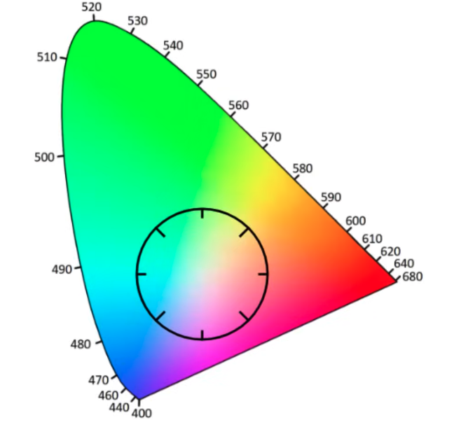
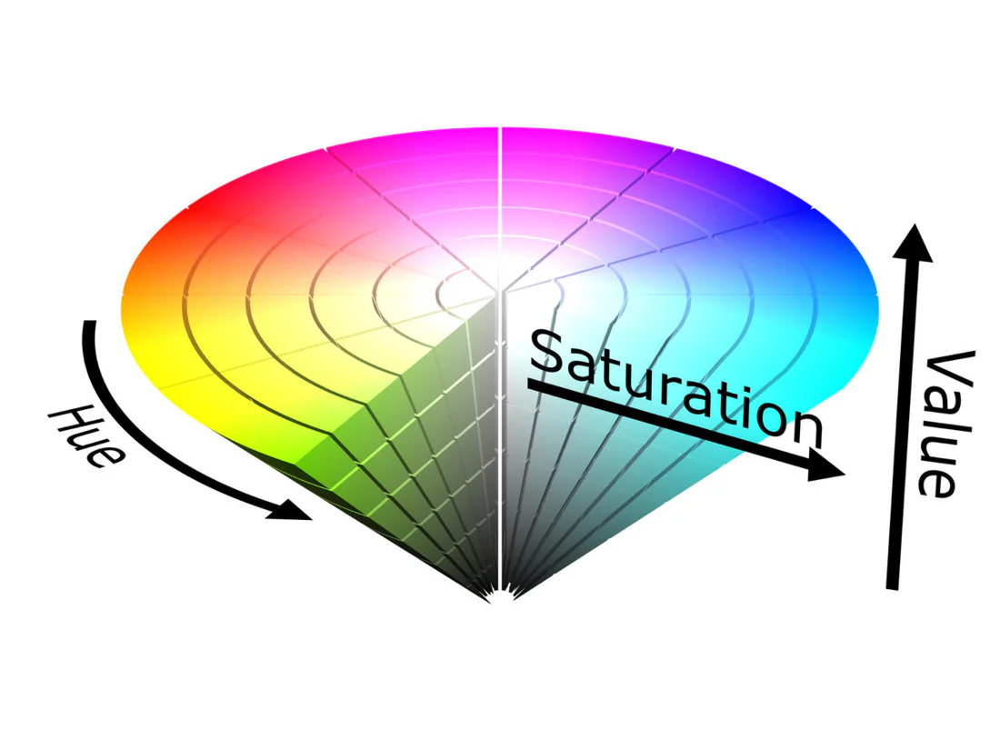

RGB 虽然从颜色组成原理上有很好的解释，但我们调整颜色时想进行某个维度的掉整比如提升亮度，改变色调，RGB 三维度的“缠绕”关系让人很难理解，这就促成了从人类感官视角HSV。[1]
HSV 色彩空间的 Hue 可以理解成 RGB 中间的白色向四周画一个圆。

The Amazing Math behind Colors! [2]RGB 到 HSV 是非线性的变换
$$ \begin{aligned} \min &= \min(R,G,B)\V&=max=\max(R,G,B)\S&=(\max-\min)/\max\H&=60\cdot \begin{cases}0+(G-B)/(\max-\min),if \max=R\2+(B-R)/(\max-\min),if \max=G\4+(R-G)/(\max-\min),if \max=B\\end{cases}\H&=H+360, if H<0 \end{aligned} $$
至此，我们的到了 HSV。

[3]